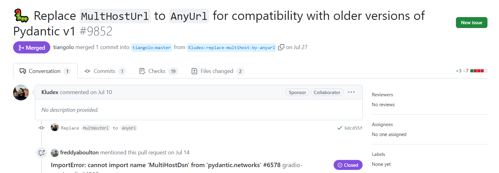

Great work has been accomplished by the Pydantic, FastAPI, and related communities during the release of Pydantic v2, with a strong emphasis on compatibility.
However, there is a recurring issue that has surfaced among users of Gradio and Hugging Face. This issue pertains to the import error related to Pydantic networks.
The message cannot import name multihostdsn from pydantic.networks is due of this v1 and v2 compatibility. It is easily solved by upgrading your Pydantic version to v1.10 or more, or migrating to Pydantic v2 if you organization / project is still not prepared for that major release migration.
As it is a rule in this blog, let’s jump quick to the solution and write a few lines of code that should solve your problem. For example, if your using poetry as your dependencies manager, you can add the Pydantic package in its v1 version, v1.10 minor version and the latest patch v.10.1 till the latest (currently v.1.10.13 is the latest version). More about package Semantic Versioning convention here.
To solve this error while using Poetry, just enter this in the terminal and the poetry project folder:
Then, you can check you Pydantic package version from the poetry.lock as:
or even
If the change is not occurring and the env get stuck, you can always drop your environment, clear cache (shouldd’t be required) and lock/install again the pyproject file.
If you are using pip/pipenv you can easily do:
If you are interested in more info, you can check the GitHub issue conversation and the PR fixing the problem that has been included in the >=1.10 release.